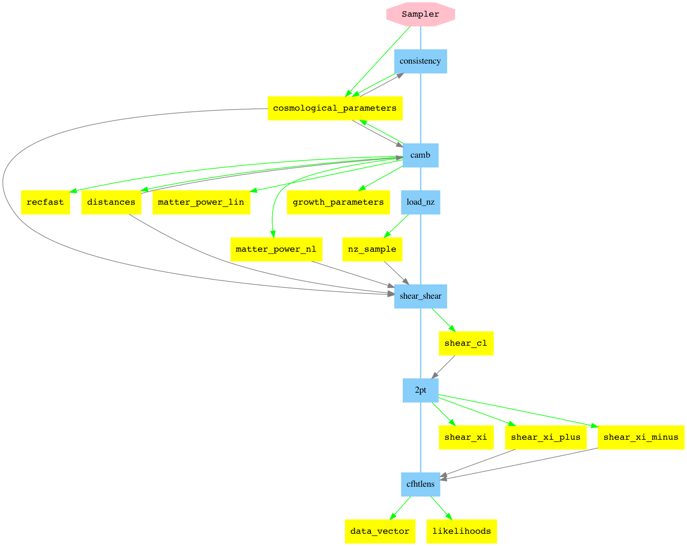

Tutorial 5: Two-Point Pipelines
CosmoSIS has been widely used in weak lensing and galaxy clustering science.
This tutorial describes a pipeline for CFHTLenS, a slightly older data set without some of the more complicated systmatic error treatments from more recent analyses, making for a simpler likelihood.
Science Overview
The general sequence of calculations for correlation function likelihoods is:
Compute the 3D matter power spectra P(k, z)
Determine galaxy source number density n(z)
Use the Limber equation (or a more precise equivalent) to integrate these two together and get the 2D power spectra C_ell
Use a Hankel transform (or a more precise equivalent) to convert from Fourier space C_ell to real space correlation functions
Compare the correlation functions to measurements
Modules in the CFHTLens pipeline correspond to the steps above, as shown in this pipeline diagram (see Pipeline Features).
Running the pipeline
You can run the CFHTLenS likelihoods like this:
cosmosis examples/cfhtlens.ini
The top part of the output is printed during the setup phase of the pipeline. It describes data that is loaded and other configuration that is done. The likelihood evaluation appears below, after the lines:
****************************
* Running sampler 1/1: test
****************************
As well as printing output to the screen, the test sampler used here can also save a directory containing everything calculated in the pipeline. In this case, the parameter save_dir in the test section tells it to save the results to outputs/cfhtlens.
As you read through the sections below, have a look at the contents of that directory to explore the calculations done in the pipeline. The directory names correspond to the block section names, shown as yellow nodes in the image above.
The pipeline runs the following modules:
[pipeline]
modules = consistency camb load_nz shear_shear 2pt cfhtlens
which we now discuss in order.
Consistency: filling in cosmological parameters
This pipeline section runs the handy cosmosis utility consistency, which takes any set of cosmological parameters, and computes a full suite of others from them. For example, if you specify H0 and Omega_m then it knows how to generate ombh2.
This module lets you sample over any reasonable choice of parameters and have it compute the other parametrizations.
By default the consistency module is silent; if you want to understand the calculations it does you can set the verbose parameter to T(rue):
[consistency]
file = utility/consistency/consistency_interface.py
verbose = F
CAMB: matter power spectra
In this version of CosmoSIS the linear and non-linear matter power calculations are usually done with the camb module. This takes the cosmological parameters as input and computes the linear and non-linear matter power spectra, and background values like distances as a function of redshift.
It also calculates CMB spectra if you need those.
The configuration used here for camb is this:
[camb]
file = boltzmann/camb/camb_interface.py
; This means to calculate everything
; including matter power
mode = all
lmax = 2500
; You would set this to zero during an MCMC
; run to avoid too much line noise
feedback=2
; This means to get non-linear P(k), but
; not bother with non-linear CMB lensing
NonLinear = pk
; These choices values should be explored
; to check for convergence
kmax = 10.0
kmax_extrapolate = 500.0
nk = 100
zmin = 0.0
zmax = 3.0
nz = 100
The code has a huge number of other parameters that you can experiment with! It can also accept many different choices of cosmological parameter.
load_nz_fits: Number Density
Lensing observables depend on the number density distribution n(z) of the galaxies observed in the sample.
This module, load_nz_fits, loads a number density n(z) from a file, and then each evaluation of the likelihood it puts that value in the block. Recall that a fresh data block is made for each likelihood evaluation, so the n(z) is put in there anew each time (the overhead is negligible).
We get n(z) from the FITS format used in DES and KIDS in this module; another module, load_nz can be used instead if you prefer to use a text file.
The configuration for this module specifies the name of the file to load, and the name of the FITS extension to load from the file, NZ_SAMPLE:
[load_nz]
file = number_density/load_nz_fits/load_nz_fits.py
nz_file = likelihood/cfhtlens/cfhtlens_heymans13.fits
data_sets = SAMPLE
This module saves the n(z) data to the nz_sample section of the datablock.
project_2d: C_ell with the Limber approximation
The CosmoSIS standard library module project_2d can be used to integrate 3D power spectra (such as matter or galaxy power spectra) with a pair of kernels into 2D power spectra using the Limber integral.
This is an approximation which often applies at small scales and/or when using a broad enough kernel.
In a flat cosmology the Limber integral is:
where the two W functions are kernels that describe the response of the statistic to with distance and P is a 3D power spectrum. Different quantities can be calculated using different choices for the W and P functions.
For galaxy clustering spectra, P is the galaxy power spectrum and the W functions are the galaxy number densities n(z).
For weak lensing spectra, P is the matter power spectrum and the W functions are given by:
The pipeline parameter file uses these configuration options:
[shear_shear]
file = structure/projection/project_2d.py
shear-shear = sample-sample
verbose = T
ell_min = 20.0
ell_max = 10000.0
n_ell = 220
The shear-shear choice tells the module to cross-correlate the n(z) found in the nz_sample section with itself. We could also get galaxy clustering C_ell using position-position, or a range of others (see the module page for project_2d).
The ell choices specify the output values - we set them large enough that we can perform the Hankel Transform below.
cl_to_xi_nicaea: correlation functions with a Hankel Transform
The CosmoSIS standard library module cl_to_xi_nicaea converts the Fourier space C_ell values to real space correlation functions, which are our observable here.
The calculation done for shear-shear correlations is:
This is the default in Nicaea, so there are no configuration options in this section. If we wanted to do clustering correlations, or to customize the input or output section names (for example if we had multiple galaxy samples) then we could add parameters to do that
2pt: likelihoods of two-point correlation quantities
Finally, we reach our likelihood. CosmoSIS has a general-purpose likelihood module for the DES/KIDS two-point FITS data format, called 2pt
The start of the configuration for this section looks like this:
[cfhtlens]
file = likelihood/2pt/2pt_like.py
data_file = likelihood/cfhtlens/cfhtlens_heymans13.fits
like_name = cfhtlens
data_sets = xi_plus xi_minus
covariance_realizations = 1656
angle_range_xi_plus_1_1 = 2.0 999999.0
angle_range_xi_plus_1_2 = 2.0 999999.0
...
We use the same data_file as we used before (the FITS file contains both the n(z) and the correlation functions).
The like_name parameter specifies that the module should name the output likelihood cfhtlens rather then the generic 2pt - this is a convenience for clarity.
We choose which data points to load from the file by setting then data_sets parameter - the two-point format has named sections for the different data types. This file format records the data type of the xi_plus and xi_minus data points in the file, so the module uses these to choose which sections of the data block should be searched for the relevant theory predictions.
The CFHTLenS covariance was estimated from simulations. This means it should be corrected by the Anderson-Hartlap factor, \(\frac{r - 1}{r - n - 2}\) where r is the number of simulations and n the number of data points. Setting the covariance_realizations parameter does this automatically.
The final (long!) set of parameters is an angular scale cut, one for each pair of bins. The CFHTLenS data goes down to \(\theta \approx\) 1 arcmin, which includes scales that we do not know how to model. These parameter remove those data points.